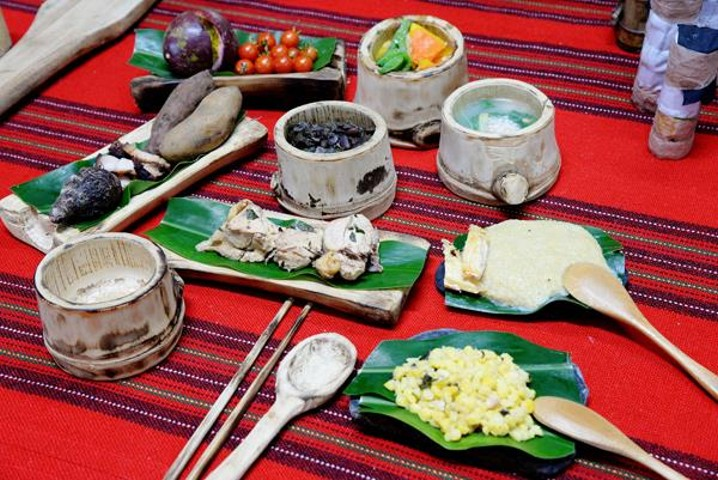

布農族的美食
美食

布農族的飲食文化
布農族的主食是稻米、小米、玉蜀黍、番薯和芋頭。
稻米是由漢人傳入的，在五月間播種、十月間收割。目前的布農族人是採用水田耕作。
玉蜀黍本來是原住民的主食，因此漢人也把玉蜀黍稱為「番麥」。大都在三月至五月間種植，七月至九月間收成。玉米收割後，除了供人食用外，也是布農族釀製玉米甜酒的原料。
番薯和芋頭也是布農族人重要的主食。尤其在1950年代臺灣物資缺乏、經濟貧困，除了供人食用外，甘藷的葉用以餵豬，是非常重要的糧食作物。
小米本來是布農族人賴以維生的主食，歲時祭儀也以栽培小米的活動為中心，但因水稻種植的普遍，小米種植就逐漸減少了。
布農族的副食品，主要是獸肉、魚類、豆類、蔬菜、及野菜。
獸肉主要靠狩獵而來，但一些靠家庭飼養。飼養的家禽，以雞、鴨、鵝為多。家獸則有山鹿、山羊、豬、兔、牛、犬等。魚類的獲得，則於溪中以魚撈和撒網捕獲為多。竹筍、木耳、野菜大多靠採集而得。
另外，煙、酒和檳榔是原住民最重要的嗜好品。惟在布農族裡，最具代表性的酒精飲料是小米酒。
小米酒是用小米經過去殼、浸泡、煮熟、發酵、儲存及濾清等過程釀成，釀酒過程一次約3－5天。小米酒色澤有如洗米水一樣白濁，香醇中帶著酸味，飲之，不嗆鼻很容易入口。
小米酒是布農族人靈魂的一部份，除了是宗教儀式上所必需外，更在重要宴客中不可或缺。
在古代，布農族人只在祭期及慶典時才能喝酒，平常日子農耕、狩獵是沒有酒喝的。但隨著社會的變遷，現在市面上買酒唾手可得，因此變成日日買酒、喝酒，「酗酒」情形就常出現在原住民的身上了
推薦的傳統布農族美食餐廳